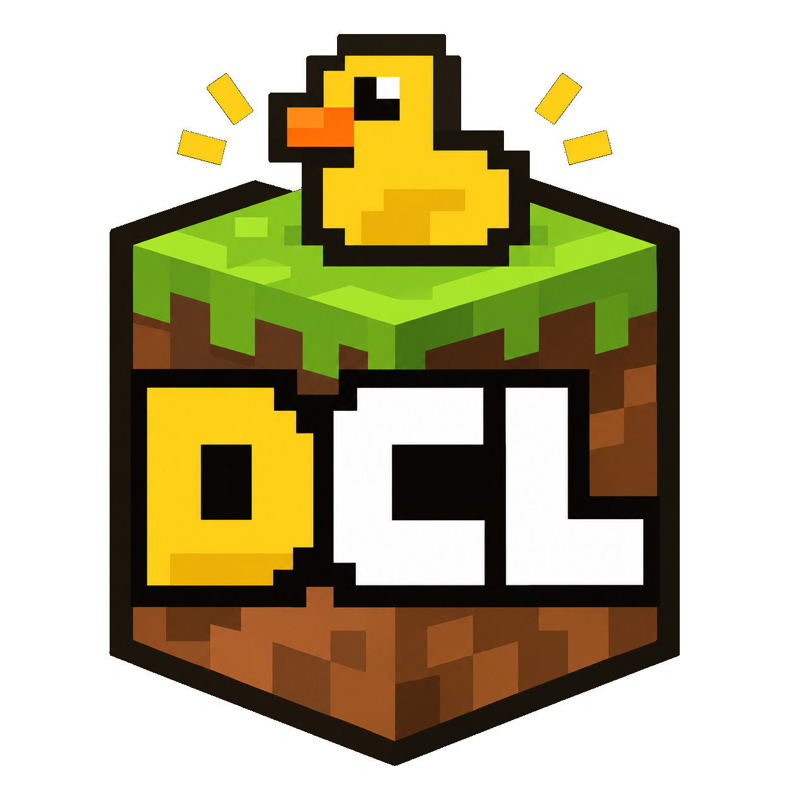

A fast, lightweight Windows launcher for Minecraft: Java Edition built with .NET 8 and WebView2, featuring version isolation, Modrinth / Forge / Fabric / NeoForge support, automatic Java & memory tuning, and Microsoft OAuth 2.0 authentication.
Supports isolated game directories under .minecraft/versions/ as well as zero-copy recognition
and import of existing external version folders.
Unified Modrinth + CurseForge browsing with Chinese/Pinyin search, category & version filtering, dependency linking, mirror fallback, and multi-segment download verification.
Detects compatible Java runtimes automatically, configures optimal G1GC / Gen-ZGC flags,
and dynamically calculates recommended -Xmx memory per instance.
consumers with scope XboxLive.signin offline_access.DataProtectionScope.CurrentUser).